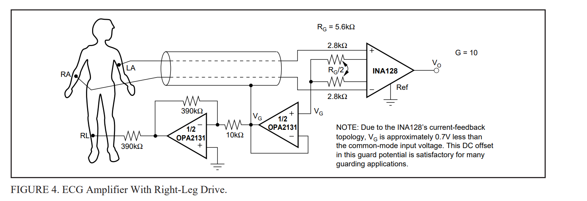
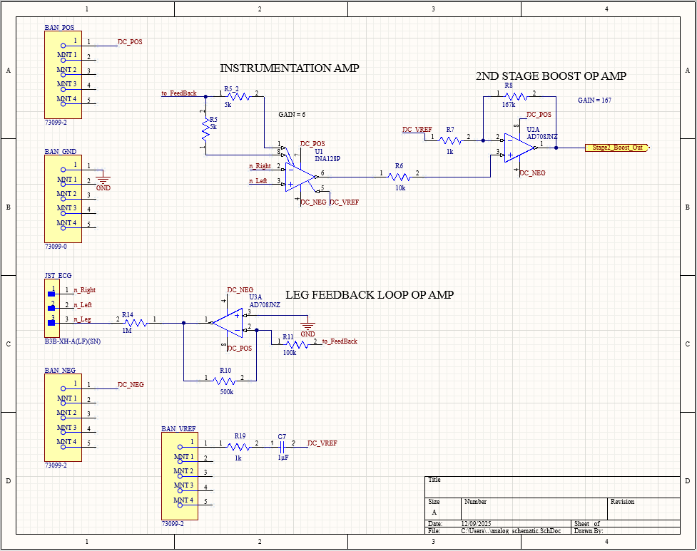
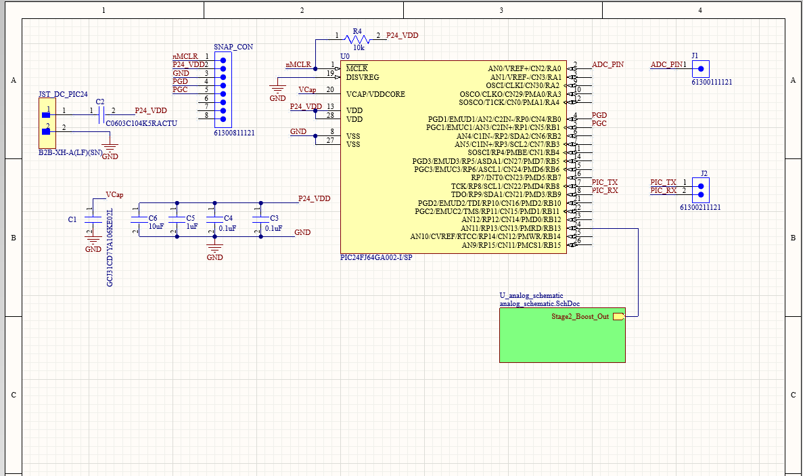

Overview
I acquired differential heartbeat signals from arm electrodes, conditioned the analog signal, converted it with a PIC24 ADC, transmitted data over UART, and graphed the output in Python.
Problem / Objective
My junior design course tasked groups with bringing up analog-to-digital electrocardiogram systems following one common blueprint: an input operational amplifier, a boosting instrumentation amplifier, and a feedback-loop operational amplifier.
My Role
I designed and verified the Altium PCB for ECG signal acquisition and worked across the acquisition chain.
System Architecture
I built around this signal chain: Arm Electrodes, INA128P instrumentation amplifier, AD708JN signal conditioning, PIC24FJ64 ADC, UART, and Python visualization, with a driven-leg common-mode feedback path. Boosted signals were supplied to a PIC24F MCU, which read the analog values and sent their digital equivalents to Python graphing software.

Technical Implementation
I used an INA128P instrumentation amplifier and two AD708JN operational amplifiers in the analog front end to condition the signal for digital conversion.
Analog front-end schematic

Digital schematic
